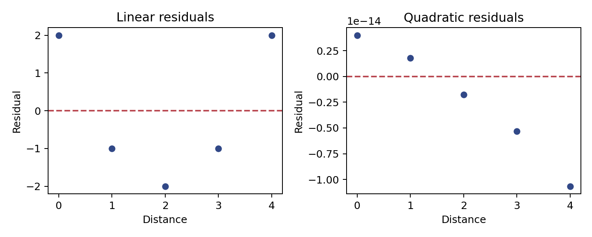

代码 3.3.3-01 · 绘制直线失配与二次修正的残差图
使用虚构教学数据。请在完整 Notebook 中按章节顺序运行；本块可能依赖前面定义的变量、导入或拟合结果。数学推导和带编号的引用见完整学习笔记。
逐步读代码
- 沿用代码 3.3.2-02 的配送数据。
subplots(1, 2)创建一行两个坐标轴。 zip将坐标轴、残差数组、标题按位置配对；循环变量 ax 每次指向一个子图。axhline(0)画残差零线，虚线用于参考。- 残差和近似零不能排除 U 形；两幅图分别展示遗漏曲线与正确表达曲线后的残差。保存和显示步骤与代码 3.2.2-08 相同。
实际运行输出
linear residual sum: 0.0
